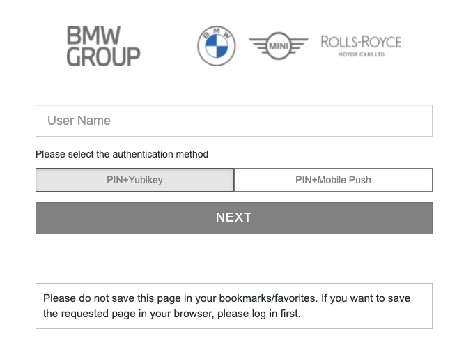

Table of Contents
Authentication and Authorization
Every UNITY app is protected by strong authentication (two-factor authentication with YubiKey) by default.
🚨 Note that the YubiKey needs to be enabled on strong-int.bmwgroup.net by every user, to be able to use it on the integration environment.
The way, authentication is working can be configured in the unity-app.*.yaml files like shown below:
auth:
enabled: true
minAuthLevel: 7000
oauth2:
enabled: true
roles:
b2x:
any:
- B2B_I
k8s:
enabled: false
Details on each attribute can be found in the unity-app schema.
Authentication
As previously stated, each app is protected with authentication by default. In rare cases, this protection can be disabled by setting the auth.enabled flag to false. Note, that this will expose all endpoints publicly to the entire BMW intranet! Disabling authentication is recommended only, if the content is public, or if authentication and authorization is implemented on the application level. That means, the app development team is responsible for handling all traffic in a secure way.
Excluded Paths
It is possible to exclude some paths from being access protected by authentication and authorization.
For example, the OpenAPI endpoint or the SwaggerUI page could be made public by excluding it from authorization as shown blow.
auth:
excludedPaths:
- /my-app/api/open-api/swagger-ui
- /my-app/api/openapi
Excluded Headers
It is possible disable the authentication and authorization depending on some headers values.
It is possible to also use pseudo-headers. For example, when the :method pseudo-header has one of the given values, there won’t be any authentication or authorization checks.
The headers values are provided via a regular expression, which is in Google LE2 dialect.
auth:
excludedHeaders:
- name: ":method"
valuesRegex: OPTIONS|PATCH
OAuth2
If the flag auth.oauth.enabled is set to true, an unauthenticated request will initiate a redirect to the WebEAM login screen.

This is the recommended setting for front-ends.
REST services, that are called via XHR requests, should typically not enable OAuth2. An unauthenticated call (due to invalid or expired token or cookie) to the back-end, should not respond with a redirect to a login-page, but with a 401 Unauthorized status code. The calling web-page is responsible for reacting to this status code. The simplest possible way is to force a page reload, which will initiate the OAuth2 flow for the user.
Here is a simple angular HTTP interceptor, which triggers the page reload.
import {Injectable} from '@angular/core';
import {
HttpErrorResponse, HttpEvent, HttpHandler, HttpInterceptor, HttpRequest
} from '@angular/common/http';
import {catchError, Observable, throwError} from 'rxjs';
@Injectable()
export class UnauthorizedInterceptor implements HttpInterceptor {
intercept(req: HttpRequest<unknown>, next: HttpHandler): Observable<HttpEvent<unknown>> {
return next.handle(req).pipe(
catchError((error: unknown) => {
if (error instanceof HttpErrorResponse) {
if (error.status === 401) {
location.reload();
}
}
return throwError(() => error);
}));
}
}
In addition, the interceptor must be added to the providers in the AppModule.
@NgModule({
// ...
providers: [
{
multi: true,
provide: HTTP_INTERCEPTORS,
useClass: UnauthorizedInterceptor,
}
],
})
export class AppModule {
}
Minimum Authentication Level
By default, the highest auth level (7000) is required to authenticate to a UNITY app. Currently, users need to authenticate with a YubiKey as second factor to get the level 7000 authentication.
If the application accepts request with lower auth levels as well, it may reduce the default auth.minAuthLevel to a lower value.
auth:
minAuthLevel: 4000
Note that the user will still be redirected to a login-page which requests authenticating with a YubiKey. To redirect to a different login page, the OAuth2 flow must be initiated on the application level, as this is not supported by UNITY out of the box. This means,
auth:
enabled: false
must be set for the UI and the SPA needs to handle the OAuth2 flow.
A typical use case would be to serve only data with a low protection need on auth level 1000 (single factor authentication) and all data on authentication level 7000.
The current user’s auth level is passed as a custom header Unity-AuthLevel to the upstream backend, which can be evaluated in a Quarkus back-end like shown below.
@Path("/v1/")
public class AuthLevelResource {
@GET
@Produces(MediaType.TEXT_PLAIN)
public String authLevel(@HeaderParam("Unity-AuthLevel") final String authLevel) {
return "Your auth level is " + authLevel;
}
}
Read more about auth levels in the WebEAM documentation.
K8s
If the flag auth.k8s.enabled is set to true, the application will be able to handle kubernetes ServiceAccount tokens.
In order to connect to an application using the service account token you must set the Authorization header to Bearer <myAppsSaToken>. Additionally, the custom header Unity-Authorization-Type must be set to Kubernetes-Service-Account to differentiate these requests from the ones using WEN token.
Authorization
Simple role requirements can be configured in the unity-app.*.yaml files.
B2X Roles
If the user requires a B2X role, like PMD or B2B_I, the following sample configuration can be employed.
auth:
roles:
b2x:
any:
- PMD
- B2B_I
This will reject any request with 403 Forbidden, if the user does not have either the PMD or the B2B_I role.
More advance role checks must be performed in the application’s back-end. Roles are passed as custom headers: Unity-B2XRole. Note that this header is repeated, if multiple roles are requested. Also note that only roles from the auth.roles.b2x.any list are passed in that header.
In a Quarkus back-end, roles can be evaluated as follows.
@Path("/v1/")
public class RolesResource {
@GET
@Produces(MediaType.TEXT_PLAIN)
public String roles(@HeaderParam("Unity-B2XRole") final List<String> roles) {
return "Your roles are: " + String.join(", ", roles);
}
}
Machine-to-Machine (M2M)
It is possible to authorize WebEAM M2M client ids to access the applications. Optionally, for each of the authorized client ids, roles may be defined which will be afterwards passed to the application via the Unity-B2XRole header.
The M2M authorization can be enabled via the unity-app.*.yaml files:
auth:
realm:
machine2machine:
client-id-1:
roles:
b2x:
- PMD
- B2B_I
If the client id is not allowed to access the application with any of the configured roles (defined in the auth.roles section), then response will be 403 Forbidden.
Instead of the user information headers, in this case the Unity-ClientId header will be set to the M2M client id.
Other Role Providers (RightNow, RoMa, Active Directory, …)
If the app requires to use a role provider, which is not integrated into UNITY, it must be handled on application level. This means, the unity-app.*.yaml file should contain a configuration, which only requests authentication:
auth:
oauth2:
enabled: true
This will make sure, all requests passed to the application have a Authorization: Bearer xyz... header with a valid WebEAM Bearer token. With that token, any role provider can be used, either employing a custom implementation, or an extension.
User Information
Some user (or M2M client id)’s attributes are passed as custom headers. The list below shows, what can be evaluated by the back-end:
Unity-Emaile.g.user@example.comUnity-B2XRolee.g.B2B_IUnity-AuthLevele.g.7000Unity-UserNamee.g.Charlie BrownUnity-UserSube.g.q12345Unity-Departmente.g.FG-123Unity-ClientIde.g.8eeb5128-87ad-48f3-a30b-631db0fb11e9(header is not set for human users)
For M2M clients, only the following headers will be present: Unity-B2XRole and Unity-ClientId.